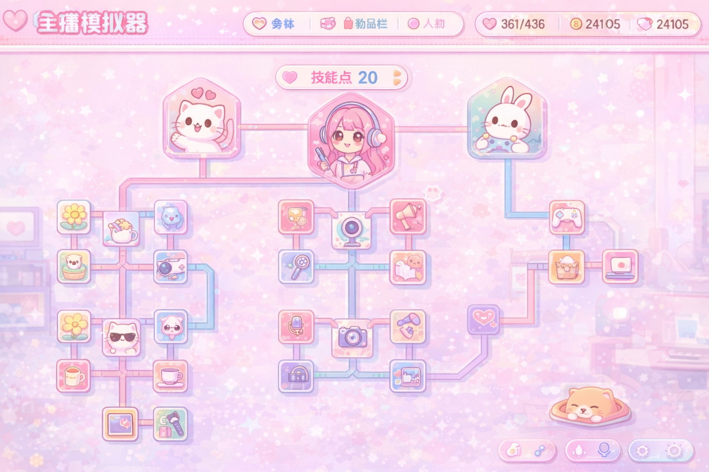

Created with Figma Make

"今天也要元气满满哦！✨"
消耗 直播点数 (SP) 来解锁和升级各种直播技能！
不同的分支会吸引不同类型的粉丝群体，优先发展你最擅长的领域吧~ 🎀
直播效果拉满，经常产生出圈名场面，引流无敌。
To view this website, enable JavaScript in your browser settings and reload the page.